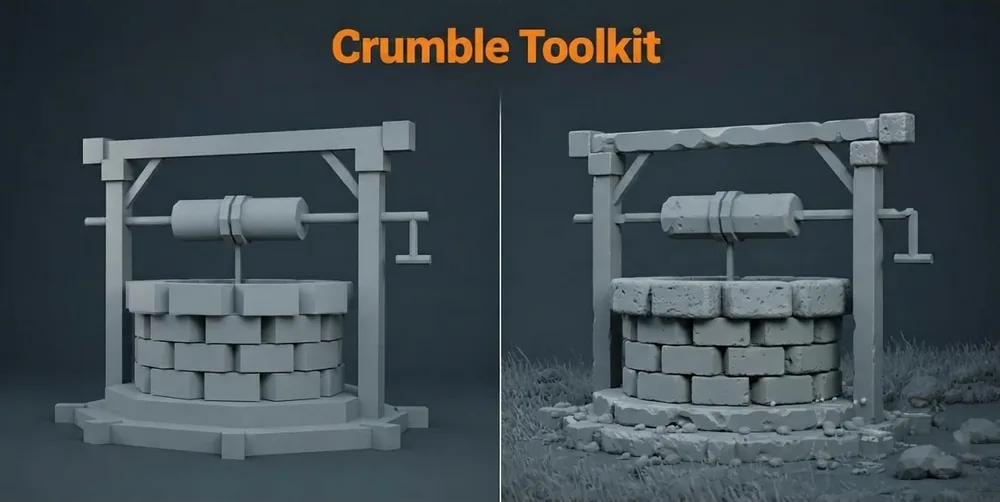

Addon BlenderEn vente

Crumble Toolkit
Le besoin
Créer de l’usure et des dégâts sur des objets 3D tout en gardant les réglages modifiables.
La solution
Quatre fonctions dans Blender : Damage, Relief, Debris et Drop to Floor. Les effets s’ajustent sans figer immédiatement le résultat.